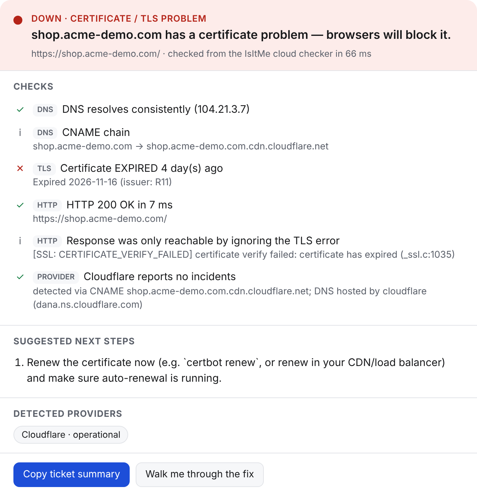

Is it down, or is it just me?
IsItMe? answers the first question of every IT incident. Ask ChatGPT about a website or API and get a verdict in seconds: is the problem the site, an upstream cloud provider, or your own side?

What it checks
DNSDoes the name resolve, do Google and Cloudflare DNS agree, is it NXDOMAIN or still propagating?
TLS certificateExpiry and days left, hostname match, trust chain, protocol version.
HTTPStatus, redirects, response time and plain-English explanations of 502/503/504 and Cloudflare 52x errors.
Provider statusDetects AWS, Azure, Google Cloud, Cloudflare, GitHub, Vercel, Netlify and more, and checks their status pages.
E-mail deliverabilityMX, SPF, DKIM and DMARC checks for "why does our mail go to spam?".
Ticket-readyEvery verdict comes with next steps and a summary you can paste into Jira, ServiceNow or Slack.
Use it
In ChatGPT: open the app directory, search for IsItMe?, connect it, then ask things like "Is github.com down or is it just me?" or "When does the certificate for my-site.com expire?".
On your own computer (Claude Desktop, Claude Code or any MCP client), where checks run from your own network and can also reach internal hosts:
pip install personal-mcp-arun personal-mcp # stdio MCP server with IsItMe? + personal assistant tools
Private by design
Read-only. No sign-in. Only public internet services can be checked from the hosted app. Nothing you check is stored. See the privacy policy.